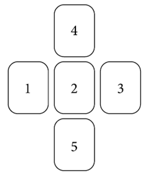

Крест используется в гаданиях и на картах Таро, и на рунах. Расклад состоит из пяти рун, делать его стоит тогда, когда речь идет не только о вопрошающем, но и о еще одной стороне. 
Руна № 1 – это прошлое, которое привело к нынешнему положению дел.
Руна № 2 – это настоящее положение дел и суть проблемы.
Руна № 3 – это исход ситуации при естественном развитии событий.
Руна № 4 – это помощь, которую вы можете ожидать со стороны других участников событий или внешних обстоятельств.
Руна № 5 – это те аспекты ситуации, которые изменить невозможно. Бороться с ними бесполезно, и х следует принять и считаться с ними.
1 руна – Наутиз. В прошлом был нарушен закон, и кара за это настигла человека в настоящем.
2 руна – Йера. Цикл подходит к концу. Человек достойно справился с кармическими испытаниями.
3 руна – Феху. Все плохое осталось позади, и наступает период огромных возможностей. Если человек постарается, то вскоре он сможет извлечь максимум из своей деятельности.
4 руна – Альгиз. Стоит ожидать покровителя или учителя, который поможет в развитии и окажет поддержку.
5 руна – Беркана. Есть определенное женское влияние, скорее всего, матери. Это нужно просто принять и не спорить.